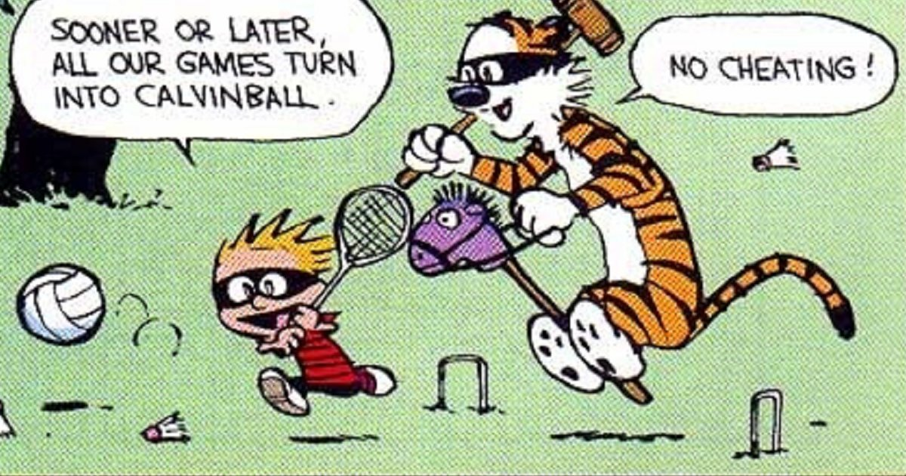

Algemene info over dit database schema kan je hier vinden.

Watterson, Calvin and Hobbes
Oefening 1
Maak een overzicht waarbij je per woonplaats aangeeft hoeveel spelers er wonen in die gemeente.Sorteer op plaats.
Oefening 2
Ga na hoeveel mannelijke en hoeveel vrouwelijke spelers de club telt. Zorg ervoor dat je lijst gesorteerd wordt van het grootst aantal spelers naar het kleinste aantal.
Oefening 3
Geef een lijst met het totaalbedrag aan boetes per speler. Sorteer het hoogste totale boetebedrag bovenaan.
Oefening 4
Geef een lijst met voor elke speler met een boete, het totaal bedrag aan boetes. Als het aantal boetes echter groter is dan 2, zet je ‘veel boetes’. Bij de andere spelers zet je een -. Sorteer op aantal boetes aflopend en daarna op totaal boetebedrag aflopend.
Oefening 5
Geef per team, waarvoor wedstrijden gespeeld zijn, het gemiddeld aantal gewonnen en verloren sets. Rond de gemiddelden af tot op twee cijfers na de komma. Sorteer op teamnr.
Oefening 6
Geef alle spelers die meer dan één wedstrijd gewonnen hebben.
Oefening 7
Geef voor alle actieve bestuursleden die al een boete gehad hebben van meer dan 50 euro hun maximale boetebedrag. Gebruik geen DISTINCT.
Oefening 8 - moeilijk
Sorteer de teams in functie van het aantal verloren wedstrijden (oplopend). Als het aantal verloren wedstrijden gelijk is, sorteer je op het totaal aantal gewonnen sets (aflopend) en op divisienaam (oplopend). Een wedstrijd die verloren werd met 3 - 0 telt niet mee in deze output. Geef het aantal wedstrijden dat voldoet aan bovenstaande voorwaarde mee in de output.
Oefening 9
Geef de teams en het aantal verschillende spelers dat voor dit team gespeeld heeft. Sorteer op divisie.
Oefening 10
Geef de teams (het nummer van het team en de divisie) waarvoor meer dan vier verschillende spelers gespeeld hebben.
Oefening 11
Maak een lijst met per spelersnummer het aantal wedstrijden dat een speler verloren heeft op voorwaarde dat deze speler meer dan één wedstrijd verloren heeft. Bijkomend moet de lijst gesorteerd worden op basis van het spelersnummer.
Oefening 12
Geef een lijst met de spelers die ooit bestuurslid zijn geweest (of nog steeds zijn) en niet in Den Haag of Zoetermeer wonen. Bijkomend mag deze speler maximaal 2 keer in het bestuur van de club gezeteld hebben. De lijst moet aflopend gesorteerd worden op het aantal maal dat de betreffende speler in het bestuur zetelde. Mensen met hetzelfde aantal keren moeten oplopend gesorteerd worden op basis van hun spelersnr.
Oefening 13
Geef het gemiddeld aantal gewonnen en verloren sets per geboortejaar. Sorteer op geboortejaar.
Oefening 14
Geef spelers die in het jaar dat ze lid geworden zijn van de club reeds een boete van meer dan 50 euro gekregen hebben en de som van al deze boetes groter of gelijk is aan 100 euro. Geef buiten de voorletters en de naam van de speler ook het aantal boetes die aan bovenstaande voorwaarden voldoen. Sorteer op spelersnr.
Oefening 15
Geef het gemiddeld boetebedrag per speler, afgerond op twee cijfers na de komma. Spelers zonder boete krijgen als waarde ‘geen boetes’. Sorteer op spelersnaam.
Oefening 16
Geef het gemiddeld aantal gewonnen en verloren sets per geboortejaar. Rond telkens af op twee cijfers na de komma. Sorteer op geboortejaar zodat de gegevens van de jongste spelers bovenaan staan.
Oefening 17
Geef voor de actieve bestuursleden zonder boete hun laatste gespeelde wedstrijd (die met het hoogste wedstrijdnummer). Sorteer aflopend op spelersnr.
Oefening 18
Geef het hoogste wedstrijdnummer voor de teams waarvoor wedstrijden gespeeld zijn door bestuursleden (actief en niet meer actief) die geen boete hebben gekregen. Sorteer op teamnr.
Oefening 19
Geef alle spelers (nummer) die meer wedstrijden gespeeld hebben dan het aantal wedstrijden dat de huidige voorzitter heeft verloren. De huidige voorzitter komt zelf niet in de lijst voor. Gebruik geen subqueries. Sorteer op spelersnr.